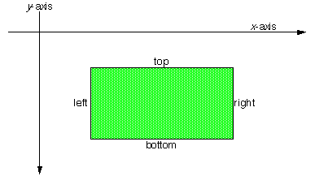
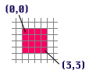
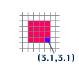
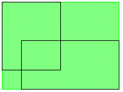

|
This function's results are unpredictable if either rectangle is invalid.
|
| The Interface Kit Table of Contents | The Interface Kit Index |
Derived from: none
Declared in: be/interface/Rect.h
Library: libbe.so
Allocation: Constructor or on the stack, typically the latter.
A BRect object represents a rectangle. BRects are used throughout the Interface Kit to define the frames of windows, views, bitmaps—even the screen itself. A BRect is defined by its four sides, expressed as the public data members left, top, right, and bottom.

When used in the screen coordinate system(as a window or view's frame, for example) a BRect's sides are aligned with the x and y axes (as shown here), and its coordinate values, which are stored as floats, are floored.
You would expect a BRect defined thus...:
BRect rect(0, 0, 3, 3);
...to have a width of 3.0 and a height of 3.0. These, indeed, are the values returned by the Width() and Height() functions. However, the coordinate system considers integer coordinates to fall in the center of pixels, so the rectangle "touches" a 4x4 pixel grid when it's applied to the screen—it appears one pixel wider and one higher than Width() and Height() would have you believe. The mapping of rectangle coordinates to pixels is explained in greater detail in "The Coordinate Space".

A rectangle's area includes the points that lie along its sides, but it doesn't necessarily contain the entire area of the pixels that it "lights up." For example, consider the point at (3.1, 3.1). This point falls outside the (0,0,3,3) BRect defined above (i.e the point doesn't Intersect() with the BRect), even though it corresponds to one of the pixels that the BRect touches (as shown here).

To represent a valid rectangle, a BRect's top value must be less than or equal to bottom, and its left must be less than or equal to right. Invalid rectangles are meaningless and can't be used (to define a window or view's area, etc.) Note that the BRect constructor and Set...() function don't prevent you from creating an invalid rectangle. Use the IsValid() boolean function to test a BRect object's validity.
float left
The value of the rectangle's left side.
float top
The value of the rectangle's top.
float right
The value of the rectangle's right side.
float bottom
The value of the rectangle's bottom.
|
Initializes a BRect as four sides, as two diametrically opposed corners, or as a copy of some other BRect object. A rectangle that's not assigned any initial values is invalid, until a specific assignment is made, either through a Set() function or by setting the object's data members directly.
|
Contains() returns true if point or rect lies entirely within the BRect's rectangle (and false if not). A rectangle contains the points that lie along its edges; for example, two identical rectangles contain each other.
Intersect() returns true if the BRect has any area—even a corner or part of a side—in common with rect, and false if it doesn't.
|
See also: & (intersection), | (union), BPoint::ConstrainTo()
|
Sorting out the different versions, there are three basic rectangle-manipulation functions here:
If a BPoint argument is used, the BPoint's x and y values are used as the x and y arguments.
The ...Self() versions of the functions are the same as the simpler versions, but they conveniently return the modified BRect. The ...Copy() versions copy the BRect, and then modify and return the copy (without changing the original).
|
Returns true if the BRect's right side is greater than or equal to its left and its bottom is greater than or equal to its top, and false otherwise. An invalid rectangle can't be used to define an interface area (such as the frame of a view or window).
|
Prints the contents of the BRect object to standard out in the form:
"BRect(left, top, right, bottom)"
|
Set() sets the object's rectangle by defining the coordinates of all four sides. The other Set...() functions move one of the rectangle's corners to the BPoint argument; the other corners and sides are modified concomittantly. None of these functions prevents you from creating an invalid rectangle.
The BPoint-returning functions return the coordinates of one of the rectangle's four corners.
|
Width() returns the numerical difference between the rectangle's right and left sides (i.e. right – left). IntegerWidth() does the same, but rounds up in the case of a fractional difference.
Height() and IntegerHeight() perform similar calculations for the height of the rectangle (i.e. bottom – top and ceil(bottom – top)).
The width and height of a BRect's rectangle, as returned through these functions
|
Copies from's rectangle data into the left-side object.
|
== returns true if the two objects' rectangles exactly coincide.
!= returns true if the two objects' rectangles don't coincide.
|
Creates and returns a new BRect that's the intersection of the two operands. The new BRect encloses the area that the two operands have in common. If the two operands don't intersect, the new BRect will be invalid.
|
Creates and returns a new BRect that minimally but completely encloses the area defined by both of the operands. The shaded area illustrates the union of the two outlined rectangles:

| The Interface Kit Table of Contents | The Interface Kit Index |
Copyright © 2000 Be, Inc. All rights reserved..